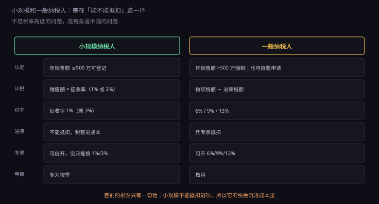
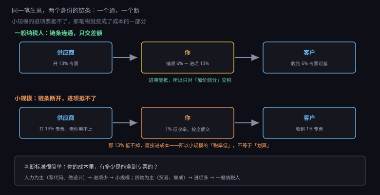
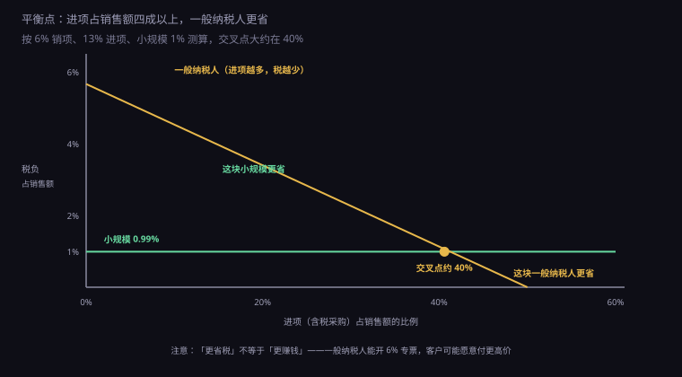

约 0.3 万字 · 3 张图 · 不是税率的差别，是「抵扣链条通不通」的差别
这两个名字容易让人误以为是"公司规模"的划分。 其实它们是两种计税方法。

小规模纳税人：按销售额乘征收率，不能抵扣进项。 目前的征收率是 3%，减按 1% 执行。
一般纳税人：按"销项税额减进项税额"交， 凭专票抵扣。税率分 6%、9%、13% 几档。
差别不在"谁交得多"，在于税是怎么算出来的。
小规模的算法是"总额乘比例"，简单粗暴，交了就完了。 一般纳税人的算法是"收的税减付的税"，需要每一笔进项都有票。
这就带来一个连锁反应： 小规模不用管进项票，一般纳税人必须管。 所以小规模的账简单、代账费便宜； 一般纳税人要专人管票、按月申报，成本高得多。
顺便解释一下"1%"这个奇怪的数字是怎么来的。
小规模的法定征收率本来是 3%。2020 年疫情之后， 为了给小微企业减负，出了阶段性政策：3% 减按 1%。 后来这个政策一再延续，目前的有效期到 2027 年底。
所以 1% 是临时的，3% 才是常态。 做长期测算时，建议按 3% 算，别把优惠政策当成永久条件。 如果哪天恢复 3%，你的成本结构会变，报价也得跟着调。
划分标准是年应征增值税销售额：500 万。
超过 500 万，必须登记为一般纳税人，没有选择余地。 没超过，可以自愿申请。
注意"年"不是自然年，是连续 12 个月。 税务系统会滚动计算，超过标准当月就会被提示。
还有一个容易忽略的点：500 万是不含税销售额。 如果你一年含税收了 530 万，按 6% 换算不含税是 500 万， 刚好卡在线上。所以算的时候要换算，不要直接拿含税数比。
超过之后不主动登记会怎样？ 税务局会通知你限期办理，逾期不办按一般纳税人的税率征税， 而且进项不许抵扣——等于按 6% 全额交， 比正常的一般纳税人还亏。
这是两个身份最本质的差别，一张图能说清。

一般纳税人：供应商开 13% 的专票给你，你抵掉； 你开 6% 的专票给客户，客户抵掉。 整条链是通的，每一环只对"加价部分"交税。
小规模：供应商开 13% 的专票给你，你抵不了。 这 13% 就变成了你的成本，摊进你的报价里。 你开 1% 的专票给客户，客户只能抵 1%。
所以小规模的问题不是"税率低"，而是税沉进了成本。
举个具体例子。你采购 113 元（含 13 元税）的原料， 加工后卖 212 元（含 12 元税）。
一般纳税人：销项 12，进项 13，应缴 -1（留抵，结转下期）。
实际成本是 100。
小规模：那 13 元抵不了，成本是 113。
卖 212 元，按 1% 交 2.1 元税。
看起来小规模只交了 2 块多，但成本高了 13 块。 综合下来，谁的利润高一目了然。
这就是为什么贸易类、集成分包类的公司，几乎都是一般纳税人： 它们的进项占比高，不抵扣太亏。 而纯人力型的公司（写代码、做设计、咨询）， 主要成本是工资，工资没有进项票，抵扣这条对它们没用。
那到底进项占多少才划算？可以算出一个交叉点。

按 6% 销项、13% 进项、小规模 1% 测算：
小规模的税负是恒定的：销售额 ÷ 1.01 × 1% ≈ 0.99%。 不管你有没有进项，都是这个数。
一般纳税人的税负随进项下降： 进项占 20% 时约 3.36%， 占 40% 时约 1.06%， 占 50% 时接近 0（开始留抵）。
两条线交叉在进项占销售额约 40% 的位置。 低于这个数，小规模省；高于这个数，一般纳税人省。
这个 40% 是可以自己算的： 看你过去一年的采购金额占收入的比例。 如果成本主要是服务器、外包、硬件、物流，占比很高，一般纳税人合适； 如果成本主要是自己的时间，占比很低，小规模合适。
算的时候记得用含税口径，两边保持一致， 不然会算出一个错误的结论。
上面那套测算只算了"你交多少税"， 但真实决策里还有一个更重要的变量：客户愿不愿意跟你做生意。
这是很多人算漏的一笔。
假设你的客户是一家一般纳税人企业，采购 10 万的服务：
你开 6% 专票，它抵 5660 元，实际成本 94340。
你开 1% 专票，它抵 990 元，实际成本 99010。
差 4670 元。对客户来说，这相当于你的报价贵了 4.7%。
在大额采购里，4.7% 足够让采购部门把你划掉。 所以很多公司招标时会直接写： "投标人须为增值税一般纳税人，能开具 6% 增值税专用发票"。 这不是歧视，是它的成本核算要求。
反过来，如果你的客户是个人消费者、小微企业、或者不在乎抵扣的行业， 那 1% 还是 6% 对它没区别，它只看总价。 这时候小规模的低税负就是纯优势。
所以选择顺序应该是： 先看客户要不要 6% 专票，再看进项占比，最后才是税负测算。 顺序反了，会算出一笔"省钱但没生意"的账。
这里还有两个小规模特有的坑，很多人踩过。
第一个：免征额是悬崖，不是斜坡。
小规模月销售额 10 万（季度 30 万）以下免征增值税。 很多人以为"超过了只对超出部分交"，不是的—— 一旦超过，全额都要交。
季度做 30 万，税是 0；做 31 万，要交 31 ÷ 1.01 × 1% ≈ 3069 元。 多做了 1 万生意，多交 3000 块税，实际到手反而少了两千。 这叫"临界点效应"。
实操上的做法是：接近临界点时，把开票时间挪到下个季度。 当然不能违规拆分，但正常的收款节奏是可以安排的。
第二个：开专票就要放弃免税。
免税和专票是互斥的。你开了专票，意味着对方要拿去抵扣， 那这笔税就必须交，不能免。
所以小规模给企业客户开专票时， 那个"季度 30 万免征"的优惠就用不上了。 如果你的客户全都要专票，小规模的身份其实没多少优势， 不如直接转一般纳税人。
顺带说一个很多人不知道的：一般纳税人也能"简易计税"。
建筑服务、不动产租赁、劳务派遣、二手车经销等特定业务， 可以选择简易计税，按 3%（部分 5%）征收，不能抵进项。 这是给那些进项确实拿不到的行业留的口子。
软件和信息技术服务不在这个范围内， 所以做技术的公司，一旦转成一般纳税人，就是 6% 加抵扣，没有第三条路。
小规模转一般纳税人：两条路。 一是超过 500 万被强制转； 二是自愿申请，只要账务健全、能准确核算销项进项，就可以办。 转了之后没有"观察期"，当月就按一般纳税人申报。
一般纳税人转小规模：难。
历史上开过几次口子（2018 年、2019 年、2020 年都有阶段性政策）， 但都是有期限的临时安排，到期就关。 目前没有普遍适用的转回通道。
所以这个选择有单向性： 从小转大容易，从大转小基本没路。
这也解释了为什么建议"先小规模"： 起步阶段业务没定型，先按简单的来； 真做大了、客户要求了，再转过去，随时可以。 反过来就麻烦了。
唯一的例外是：如果你一开始就确定要做企业客户、 要接政府或大厂的项目，那就别犹豫，直接一般纳税人。 因为这类客户从第一天就会要 6% 的票。
给一个可以直接照做的判断流程。
第一步，问客户。 你未来 80% 的收入来自谁？如果是企业，问它"要不要专票、几个点"。 这一句话就能定八成。
第二步，算进项。 过去一年（或者预估第一年）的采购金额 ÷ 收入。 超过 40%，一般纳税人更省税；低于 20%，小规模明显更省。
第三步，看趋势。 预计一年内会超过 500 万吗？ 如果会，早点转，别等到被强制—— 强制转的时候，之前的进项票可能已经过期，抵不了。
第四步，算维护成本。 一般纳税人要按月申报、要专人管票， 代账费通常比小规模贵一倍（一年差两三千）。 业务量小的时候，这笔固定成本占比不小。
综合下来，绝大多数技术创业者的路径是： 先小规模，享受免征额和 1% 征收率； 接到第一个要求专票的企业客户时，再评估要不要转。
误区一：小规模税率低，所以一定省钱。 只在进项少的时候成立。进项多的话，抵不了的税全进成本， 反而更贵。
误区二：小规模不能开专票。 早就能自开了（2020 年起全面放开），只是只能开 1% 或 3% 的。 客户能抵的少，但票是合法的。
误区三：一般纳税人交的税一定多。 看毛利。毛利率低（进项占比高）的生意，一般纳税人交的税可能比小规模还少， 甚至长期留抵不交。
误区四：可以先按小规模，等客户要票了再"补开"。 不行。你开不出 6% 的票，是因为你不在那个身份里。 要开 6%，得先完成一般纳税人登记， 登记之前的业务不能按 6% 补开。